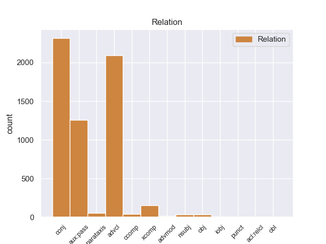
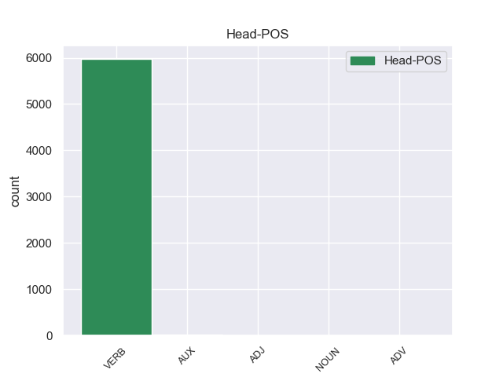
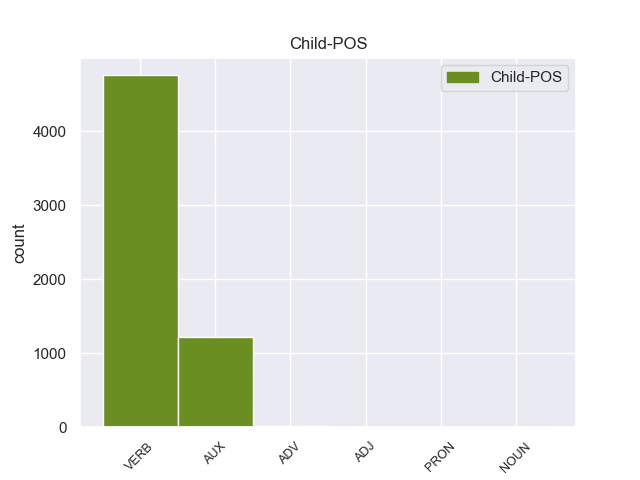

Distribution of features within this leaf



Agreement Rules sorted by frequency.
- When the dependent token is the conjunct(conj) of the head token,
1 En _ _ _ _ 0 _ _ _
2 1991 _ _ _ _ 0 _ _ _
3 , _ _ _ _ 0 _ _ _
4 como _ _ _ _ 0 _ _ _
5 ya _ _ _ _ 0 _ _ _
6 está _ _ _ _ 0 _ _ _
7 indicado _ _ _ _ 0 _ _ _
8 en _ _ _ _ 0 _ _ _
9 el _ _ _ _ 0 _ _ _
10 párrafo _ _ _ _ 0 _ _ _
11 anterior _ _ _ _ 0 _ _ _
12 , _ _ _ _ 0 _ _ _
13 se _ _ _ _ 0 _ _ _
14 creó crear VERB _ Mood=Ind|Number=Sing|Person=3|Tense=Past|VerbForm=Fin 0 _ _ _
15 un _ _ _ _ 0 _ _ _
16 equipo _ _ _ _ 0 _ _ _
17 ad _ _ _ _ 0 _ _ _
18 hoc _ _ _ _ 0 _ _ _
19 para _ _ _ _ 0 _ _ _
20 averiguar _ _ _ _ 0 _ _ _
21 como _ _ _ _ 0 _ _ _
22 se _ _ _ _ 0 _ _ _
23 podía _ _ _ _ 0 _ _ _
24 desarrollar _ _ _ _ 0 _ _ _
25 el _ _ _ _ 0 _ _ _
26 Dialogo _ _ _ _ 0 _ _ _
27 Social _ _ _ _ 0 _ _ _
28 , _ _ _ _ 0 _ _ _
29 este _ _ _ _ 0 _ _ _
30 equipo _ _ _ _ 0 _ _ _
31 estaba _ _ _ _ 0 _ _ _
32 formado formado VERB _ Gender=Masc|Number=Sing|Tense=Past|VerbForm=Part 14 conj _ _
33 por _ _ _ _ 0 _ _ _
34 representantes _ _ _ _ 0 _ _ _
35 de _ _ _ _ 0 _ _ _
36 todas _ _ _ _ 0 _ _ _
37 las _ _ _ _ 0 _ _ _
38 organizaciones _ _ _ _ 0 _ _ _
39 relacionadas _ _ _ _ 0 _ _ _
40 con _ _ _ _ 0 _ _ _
41 CES _ _ _ _ 0 _ _ _
42 , _ _ _ _ 0 _ _ _
43 UNICE _ _ _ _ 0 _ _ _
44 y _ _ _ _ 0 _ _ _
45 CEEP _ _ _ _ 0 _ _ _
46 ; _ _ _ _ 0 _ _ _
1 Para _ _ _ _ 0 _ _ _
2 poder _ _ _ _ 0 _ _ _
3 estudiar _ _ _ _ 0 _ _ _
4 los _ _ _ _ 0 _ _ _
5 mejor _ _ _ _ 0 _ _ _
6 , _ _ _ _ 0 _ _ _
7 Ghazali _ _ _ _ 0 _ _ _
8 introdujo _ _ _ _ 0 _ _ _
9 varios _ _ _ _ 0 _ _ _
10 peces _ _ _ _ 0 _ _ _
11 en _ _ _ _ 0 _ _ _
12 un _ _ _ _ 0 _ _ _
13 tanque _ _ _ _ 0 _ _ _
14 y _ _ _ _ 0 _ _ _
15 , _ _ _ _ 0 _ _ _
16 tras _ _ _ _ 0 _ _ _
17 varias _ _ _ _ 0 _ _ _
18 semanas _ _ _ _ 0 _ _ _
19 de _ _ _ _ 0 _ _ _
20 aclimatación _ _ _ _ 0 _ _ _
21 , _ _ _ _ 0 _ _ _
22 comenzó comenzar VERB _ Mood=Ind|Number=Sing|Person=3|Tense=Past|VerbForm=Fin 0 _ _ _
23 a _ _ _ _ 0 _ _ _
24 grabar _ _ _ _ 0 _ _ _
25 sus _ _ _ _ 0 _ _ _
26 sonidos _ _ _ _ 0 _ _ _
27 , _ _ _ _ 0 _ _ _
28 según _ _ _ _ 0 _ _ _
29 recoge recoge VERB _ Mood=Ind|Number=Sing|Person=3|Tense=Past|VerbForm=Fin 22 advcl _ _
30 el _ _ _ _ 0 _ _ _
31 periódico _ _ _ _ 0 _ _ _
32 New _ _ _ _ 0 _ _ _
33 Zealand _ _ _ _ 0 _ _ _
34 Herald _ _ _ _ 0 _ _ _
35 . _ _ _ _ 0 _ _ _
1 En _ _ _ _ 0 _ _ _
2 estos _ _ _ _ 0 _ _ _
3 trabajos _ _ _ _ 0 _ _ _
4 se _ _ _ _ 0 _ _ _
5 pusieron _ _ _ _ 0 _ _ _
6 a _ _ _ _ 0 _ _ _
7 el _ _ _ _ 0 _ _ _
8 descubierto _ _ _ _ 0 _ _ _
9 25 _ _ _ _ 0 _ _ _
10 vanos _ _ _ _ 0 _ _ _
11 correspondientes _ _ _ _ 0 _ _ _
12 a _ _ _ _ 0 _ _ _
13 ventanas _ _ _ _ 0 _ _ _
14 saeteras _ _ _ _ 0 _ _ _
15 que _ _ _ _ 0 _ _ _
16 habían _ _ _ _ 0 _ _ _
17 sido ser AUX _ Gender=Masc|Number=Sing|Tense=Past|VerbForm=Part 18 aux:pass _ _
18 tapiadas tapiadas VERB _ Gender=Masc|Number=Sing|Tense=Past|VerbForm=Part 0 _ _ _
19 en _ _ _ _ 0 _ _ _
20 los _ _ _ _ 0 _ _ _
21 siglos _ _ _ _ 0 _ _ _
22 anteriores _ _ _ _ 0 _ _ _
23 . _ _ _ _ 0 _ _ _
1 De _ _ _ _ 0 _ _ _
2 la _ _ _ _ 0 _ _ _
3 Vega _ _ _ _ 0 _ _ _
4 ha _ _ _ _ 0 _ _ _
5 pedido pedido VERB _ Gender=Masc|Number=Sing|Tense=Past|VerbForm=Part 0 _ _ _
6 respetar respetar VERB _ Gender=Masc|Number=Sing|Tense=Past|VerbForm=Part 5 xcomp _ _
7 los _ _ _ _ 0 _ _ _
8 tiempos _ _ _ _ 0 _ _ _
9 de _ _ _ _ 0 _ _ _
10 los _ _ _ _ 0 _ _ _
11 procesos _ _ _ _ 0 _ _ _
12 y _ _ _ _ 0 _ _ _
13 de _ _ _ _ 0 _ _ _
14 la _ _ _ _ 0 _ _ _
15 misma _ _ _ _ 0 _ _ _
16 manera _ _ _ _ 0 _ _ _
17 que _ _ _ _ 0 _ _ _
18 no _ _ _ _ 0 _ _ _
19 ha _ _ _ _ 0 _ _ _
20 querido _ _ _ _ 0 _ _ _
21 entrar _ _ _ _ 0 _ _ _
22 en _ _ _ _ 0 _ _ _
23 la _ _ _ _ 0 _ _ _
24 salida _ _ _ _ 0 _ _ _
25 de _ _ _ _ 0 _ _ _
26 Corbacho _ _ _ _ 0 _ _ _
27 , _ _ _ _ 0 _ _ _
28 tampoco _ _ _ _ 0 _ _ _
29 lo _ _ _ _ 0 _ _ _
30 ha _ _ _ _ 0 _ _ _
31 hecho _ _ _ _ 0 _ _ _
32 la _ _ _ _ 0 _ _ _
33 posible _ _ _ _ 0 _ _ _
34 salida _ _ _ _ 0 _ _ _
35 de _ _ _ _ 0 _ _ _
36 Trinidad _ _ _ _ 0 _ _ _
37 Jiménez _ _ _ _ 0 _ _ _
38 , _ _ _ _ 0 _ _ _
39 que _ _ _ _ 0 _ _ _
40 le _ _ _ _ 0 _ _ _
41 acompañaba _ _ _ _ 0 _ _ _
42 en _ _ _ _ 0 _ _ _
43 la _ _ _ _ 0 _ _ _
44 sala _ _ _ _ 0 _ _ _
45 de _ _ _ _ 0 _ _ _
46 prensa _ _ _ _ 0 _ _ _
47 . _ _ _ _ 0 _ _ _
1 Se _ _ _ _ 0 _ _ _
2 reincorporó reincorporó VERB _ Mood=Ind|Number=Sing|Person=3|Tense=Past|VerbForm=Fin 0 _ _ _
3 el _ _ _ _ 0 _ _ _
4 14 _ _ _ _ 0 _ _ _
5 de _ _ _ _ 0 _ _ _
6 septiembre _ _ _ _ 0 _ _ _
7 de _ _ _ _ 0 _ _ _
8 1839 _ _ _ _ 0 _ _ _
9 y _ _ _ _ 0 _ _ _
10 se _ _ _ _ 0 _ _ _
11 le _ _ _ _ 0 _ _ _
12 nombró nombrar VERB _ Mood=Ind|Number=Sing|Person=3|Tense=Past|VerbForm=Fin 2 parataxis _ _
13 comandante _ _ _ _ 0 _ _ _
14 general _ _ _ _ 0 _ _ _
15 de _ _ _ _ 0 _ _ _
16 armas _ _ _ _ 0 _ _ _
17 de _ _ _ _ 0 _ _ _
18 Santiago _ _ _ _ 0 _ _ _
19 . _ _ _ _ 0 _ _ _
1 Pasó pasó VERB _ Mood=Ind|Number=Sing|Person=3|Tense=Past|VerbForm=Fin 8 nsubj _ _
2 luego _ _ _ _ 0 _ _ _
3 a _ _ _ _ 0 _ _ _
4 Panamá _ _ _ _ 0 _ _ _
5 , _ _ _ _ 0 _ _ _
6 donde _ _ _ _ 0 _ _ _
7 se _ _ _ _ 0 _ _ _
8 incorporó incorporó VERB _ Mood=Ind|Number=Sing|Person=3|Tense=Past|VerbForm=Fin 0 _ _ _
9 en _ _ _ _ 0 _ _ _
10 la _ _ _ _ 0 _ _ _
11 expedición _ _ _ _ 0 _ _ _
12 que _ _ _ _ 0 _ _ _
13 el _ _ _ _ 0 _ _ _
14 licenciado _ _ _ _ 0 _ _ _
15 Gaspar _ _ _ _ 0 _ _ _
16 de _ _ _ _ 0 _ _ _
17 Espinosa _ _ _ _ 0 _ _ _
18 organizó _ _ _ _ 0 _ _ _
19 para _ _ _ _ 0 _ _ _
20 ayudar _ _ _ _ 0 _ _ _
21 a _ _ _ _ 0 _ _ _
22 Pizarro _ _ _ _ 0 _ _ _
23 , _ _ _ _ 0 _ _ _
24 pero _ _ _ _ 0 _ _ _
25 a _ _ _ _ 0 _ _ _
26 el _ _ _ _ 0 _ _ _
27 fracasar _ _ _ _ 0 _ _ _
28 esta _ _ _ _ 0 _ _ _
29 en _ _ _ _ 0 _ _ _
30 el _ _ _ _ 0 _ _ _
31 río _ _ _ _ 0 _ _ _
32 de _ _ _ _ 0 _ _ _
33 San _ _ _ _ 0 _ _ _
34 Juan _ _ _ _ 0 _ _ _
35 , _ _ _ _ 0 _ _ _
36 regresó _ _ _ _ 0 _ _ _
37 a _ _ _ _ 0 _ _ _
38 Panamá _ _ _ _ 0 _ _ _
39 , _ _ _ _ 0 _ _ _
40 y _ _ _ _ 0 _ _ _
41 luego _ _ _ _ 0 _ _ _
42 a _ _ _ _ 0 _ _ _
43 España _ _ _ _ 0 _ _ _
44 . _ _ _ _ 0 _ _ _
1 El _ _ _ _ 0 _ _ _
2 8 _ _ _ _ 0 _ _ _
3 ° _ _ _ _ 0 _ _ _
4 congreso _ _ _ _ 0 _ _ _
5 tuvo svor VERB _ Mood=Ind|Number=Sing|Person=3|Tense=Past|VerbForm=Fin 0 _ _ _
6 lugar lugar VERB _ Gender=Masc|Number=Sing|Tense=Past|VerbForm=Part 5 obj _ _
7 en _ _ _ _ 0 _ _ _
8 Estambul _ _ _ _ 0 _ _ _
9 en _ _ _ _ 0 _ _ _
10 2007 _ _ _ _ 0 _ _ _
11 , _ _ _ _ 0 _ _ _
12 el _ _ _ _ 0 _ _ _
13 9 _ _ _ _ 0 _ _ _
14 ° _ _ _ _ 0 _ _ _
15 congreso _ _ _ _ 0 _ _ _
16 se _ _ _ _ 0 _ _ _
17 realizó _ _ _ _ 0 _ _ _
18 en _ _ _ _ 0 _ _ _
19 Venecia _ _ _ _ 0 _ _ _
20 en _ _ _ _ 0 _ _ _
21 2010 _ _ _ _ 0 _ _ _
22 , _ _ _ _ 0 _ _ _
23 y _ _ _ _ 0 _ _ _
24 el _ _ _ _ 0 _ _ _
25 10 _ _ _ _ 0 _ _ _
26 ° _ _ _ _ 0 _ _ _
27 en _ _ _ _ 0 _ _ _
28 Buenos _ _ _ _ 0 _ _ _
29 Aires _ _ _ _ 0 _ _ _
30 en _ _ _ _ 0 _ _ _
31 2012 _ _ _ _ 0 _ _ _
32 ( _ _ _ _ 0 _ _ _
33 http://www.aisv2012.org _ _ _ _ 0 _ _ _
34 ) _ _ _ _ 0 _ _ _
35 . _ _ _ _ 0 _ _ _
1 En _ _ _ _ 0 _ _ _
2 cambio _ _ _ _ 0 _ _ _
3 hay _ _ _ _ 0 _ _ _
4 personas _ _ _ _ 0 _ _ _
5 con _ _ _ _ 0 _ _ _
6 convincentes _ _ _ _ 0 _ _ _
7 argumentos _ _ _ _ 0 _ _ _
8 racionales _ _ _ _ 0 _ _ _
9 extraídas _ _ _ _ 0 _ _ _
10 de _ _ _ _ 0 _ _ _
11 los _ _ _ _ 0 _ _ _
12 escépticos _ _ _ _ 0 _ _ _
13 que _ _ _ _ 0 _ _ _
14 afirman afirman VERB _ Mood=Ind|Number=Plur|Person=3|Tense=Pres|VerbForm=Fin 0 _ _ _
15 que _ _ _ _ 0 _ _ _
16 la _ _ _ _ 0 _ _ _
17 única _ _ _ _ 0 _ _ _
18 verdad _ _ _ _ 0 _ _ _
19 está está VERB _ Mood=Ind|Number=Sing|Person=3|Tense=Pres|VerbForm=Fin 14 ccomp _ _
20 en _ _ _ _ 0 _ _ _
21 el _ _ _ _ 0 _ _ _
22 Apocalipsis _ _ _ _ 0 _ _ _
23 , _ _ _ _ 0 _ _ _
24 pero _ _ _ _ 0 _ _ _
25 no _ _ _ _ 0 _ _ _
26 tienen _ _ _ _ 0 _ _ _
27 interés _ _ _ _ 0 _ _ _
28 en _ _ _ _ 0 _ _ _
29 las _ _ _ _ 0 _ _ _
30 verdades _ _ _ _ 0 _ _ _
31 religiosas _ _ _ _ 0 _ _ _
32 en _ _ _ _ 0 _ _ _
33 sí _ _ _ _ 0 _ _ _
34 , _ _ _ _ 0 _ _ _
35 sino _ _ _ _ 0 _ _ _
36 que _ _ _ _ 0 _ _ _
37 las _ _ _ _ 0 _ _ _
38 declaraciones _ _ _ _ 0 _ _ _
39 de _ _ _ _ 0 _ _ _
40 fe _ _ _ _ 0 _ _ _
41 de _ _ _ _ 0 _ _ _
42 los _ _ _ _ 0 _ _ _
43 libertinos _ _ _ _ 0 _ _ _
44 parecen _ _ _ _ 0 _ _ _
45 más _ _ _ _ 0 _ _ _
46 herramientas _ _ _ _ 0 _ _ _
47 para _ _ _ _ 0 _ _ _
48 evitar _ _ _ _ 0 _ _ _
49 la _ _ _ _ 0 _ _ _
50 persecución _ _ _ _ 0 _ _ _
51 y _ _ _ _ 0 _ _ _
52 tribulaciones _ _ _ _ 0 _ _ _
53 . _ _ _ _ 0 _ _ _
1 Este _ _ _ _ 0 _ _ _
2 legado _ _ _ _ 0 _ _ _
3 colonial _ _ _ _ 0 _ _ _
4 está _ _ _ _ 0 _ _ _
5 ahora ahora ADV _ Gender=Masc|Number=Sing|Tense=Past|VerbForm=Part 6 advmod _ _
6 superpuesto superpuesto VERB _ Mood=Ind|Number=Sing|Person=3|Tense=Past|VerbForm=Fin 0 _ _ _
7 por _ _ _ _ 0 _ _ _
8 un _ _ _ _ 0 _ _ _
9 aura _ _ _ _ 0 _ _ _
10 romántico _ _ _ _ 0 _ _ _
11 de _ _ _ _ 0 _ _ _
12 las _ _ _ _ 0 _ _ _
13 inocentes _ _ _ _ 0 _ _ _
14 transacciones _ _ _ _ 0 _ _ _
15 de _ _ _ _ 0 _ _ _
16 nuestra _ _ _ _ 0 _ _ _
17 infancia _ _ _ _ 0 _ _ _
18 , _ _ _ _ 0 _ _ _
19 perpetuando _ _ _ _ 0 _ _ _
20 el _ _ _ _ 0 _ _ _
21 mito _ _ _ _ 0 _ _ _
22 de _ _ _ _ 0 _ _ _
23 una _ _ _ _ 0 _ _ _
24 " _ _ _ _ 0 _ _ _
25 economía _ _ _ _ 0 _ _ _
26 de _ _ _ _ 0 _ _ _
27 el _ _ _ _ 0 _ _ _
28 don _ _ _ _ 0 _ _ _
29 " _ _ _ _ 0 _ _ _
30 en _ _ _ _ 0 _ _ _
31 la _ _ _ _ 0 _ _ _
32 antropología _ _ _ _ 0 _ _ _
33 post _ _ _ _ 0 _ _ _
34 - _ _ _ _ 0 _ _ _
35 colonial _ _ _ _ 0 _ _ _
36 . _ _ _ _ 0 _ _ _
1 A _ _ _ _ 0 _ _ _
2 estos _ _ _ _ 0 _ _ _
3 estados _ _ _ _ 0 _ _ _
4 se _ _ _ _ 0 _ _ _
5 les él PRON _ Mood=Ind|Number=Plur|Person=3|Tense=Pres|VerbForm=Fin 6 iobj _ _
6 llama llamr VERB _ Mood=Ind|Number=Sing|Person=3|Tense=Pres|VerbForm=Fin 0 _ _ _
7 , _ _ _ _ 0 _ _ _
8 más _ _ _ _ 0 _ _ _
9 o _ _ _ _ 0 _ _ _
10 menos _ _ _ _ 0 _ _ _
11 formalmente _ _ _ _ 0 _ _ _
12 , _ _ _ _ 0 _ _ _
13 los _ _ _ _ 0 _ _ _
14 Estados _ _ _ _ 0 _ _ _
15 Unidos _ _ _ _ 0 _ _ _
16 continentales _ _ _ _ 0 _ _ _
17 o _ _ _ _ 0 _ _ _
18 contiguos _ _ _ _ 0 _ _ _
19 y _ _ _ _ 0 _ _ _
20 , _ _ _ _ 0 _ _ _
21 en _ _ _ _ 0 _ _ _
22 ocasiones _ _ _ _ 0 _ _ _
23 , _ _ _ _ 0 _ _ _
24 los _ _ _ _ 0 _ _ _
25 48 _ _ _ _ 0 _ _ _
26 inferiores _ _ _ _ 0 _ _ _
27 . _ _ _ _ 0 _ _ _
1 Este _ _ _ _ 0 _ _ _
2 sin _ _ _ _ 0 _ _ _
3 el _ _ _ _ 0 _ _ _
4 consentimiento _ _ _ _ 0 _ _ _
5 de _ _ _ _ 0 _ _ _
6 Manson _ _ _ _ 0 _ _ _
7 , _ _ _ _ 0 _ _ _
8 re _ _ _ _ 0 _ _ _
9 - - VERB _ Mood=Ind|Number=Sing|Person=3|Tense=Past|VerbForm=Fin 10 punct _ _
10 escribió escribiar VERB _ Mood=Ind|Number=Sing|Person=3|Tense=Past|VerbForm=Fin 0 _ _ _
11 la _ _ _ _ 0 _ _ _
12 canción _ _ _ _ 0 _ _ _
13 el _ _ _ _ 0 _ _ _
14 11 _ _ _ _ 0 _ _ _
15 de _ _ _ _ 0 _ _ _
16 septiembre _ _ _ _ 0 _ _ _
17 de _ _ _ _ 0 _ _ _
18 1968 _ _ _ _ 0 _ _ _
19 , _ _ _ _ 0 _ _ _
20 cambiando _ _ _ _ 0 _ _ _
21 algunas _ _ _ _ 0 _ _ _
22 cosas _ _ _ _ 0 _ _ _
23 de _ _ _ _ 0 _ _ _
24 la _ _ _ _ 0 _ _ _
25 lírica _ _ _ _ 0 _ _ _
26 de _ _ _ _ 0 _ _ _
27 el _ _ _ _ 0 _ _ _
28 tema _ _ _ _ 0 _ _ _
29 , _ _ _ _ 0 _ _ _
30 la _ _ _ _ 0 _ _ _
31 cantó _ _ _ _ 0 _ _ _
32 y _ _ _ _ 0 _ _ _
33 grabó _ _ _ _ 0 _ _ _
34 con _ _ _ _ 0 _ _ _
35 su _ _ _ _ 0 _ _ _
36 grupo _ _ _ _ 0 _ _ _
37 e _ _ _ _ 0 _ _ _
38 incluyó _ _ _ _ 0 _ _ _
39 en _ _ _ _ 0 _ _ _
40 el _ _ _ _ 0 _ _ _
41 álbum _ _ _ _ 0 _ _ _
42 20 _ _ _ _ 0 _ _ _
43 / _ _ _ _ 0 _ _ _
44 20 _ _ _ _ 0 _ _ _
45 de _ _ _ _ 0 _ _ _
46 el _ _ _ _ 0 _ _ _
47 año _ _ _ _ 0 _ _ _
48 1969 _ _ _ _ 0 _ _ _
49 . _ _ _ _ 0 _ _ _
1 Destacan destacan VERB _ Mood=Ind|Number=Sing|Person=3|Tense=Pres|VerbForm=Fin 0 _ _ _
2 temas _ _ _ _ 0 _ _ _
3 como _ _ _ _ 0 _ _ _
4 Ya _ _ _ _ 0 _ _ _
5 no _ _ _ _ 0 _ _ _
6 danzo _ _ _ _ 0 _ _ _
7 al _ _ _ _ 0 _ _ _
8 son son NOUN _ Mood=Ind|Number=Plur|Person=3|Tense=Pres|VerbForm=Fin 1 obl _ _
9 de _ _ _ _ 0 _ _ _
10 los _ _ _ _ 0 _ _ _
11 tambores _ _ _ _ 0 _ _ _
12 o _ _ _ _ 0 _ _ _
13 Llanto _ _ _ _ 0 _ _ _
14 de _ _ _ _ 0 _ _ _
15 pasión _ _ _ _ 0 _ _ _
16 . _ _ _ _ 0 _ _ _
Disagree Examples:
1 Es _ _ _ _ 0 _ _ _
2 así _ _ _ _ 0 _ _ _
3 como _ _ _ _ 0 _ _ _
4 nacen _ _ _ _ 0 _ _ _
5 partidos _ _ _ _ 0 _ _ _
6 como _ _ _ _ 0 _ _ _
7 PASR _ _ _ _ 0 _ _ _
8 en _ _ _ _ 0 _ _ _
9 el _ _ _ _ 0 _ _ _
10 Estado _ _ _ _ 0 _ _ _
11 Delta _ _ _ _ 0 _ _ _
12 Amacuro _ _ _ _ 0 _ _ _
13 , _ _ _ _ 0 _ _ _
14 FVR _ _ _ _ 0 _ _ _
15 en _ _ _ _ 0 _ _ _
16 el _ _ _ _ 0 _ _ _
17 Estado _ _ _ _ 0 _ _ _
18 Miranda _ _ _ _ 0 _ _ _
19 , _ _ _ _ 0 _ _ _
20 FUVE _ _ _ _ 0 _ _ _
21 en _ _ _ _ 0 _ _ _
22 el _ _ _ _ 0 _ _ _
23 Estado _ _ _ _ 0 _ _ _
24 Anzoátegui _ _ _ _ 0 _ _ _
25 , _ _ _ _ 0 _ _ _
26 CRV _ _ _ _ 0 _ _ _
27 en _ _ _ _ 0 _ _ _
28 Caracas _ _ _ _ 0 _ _ _
29 y _ _ _ _ 0 _ _ _
30 otros _ _ _ _ 0 _ _ _
31 , _ _ _ _ 0 _ _ _
32 en _ _ _ _ 0 _ _ _
33 enero _ _ _ _ 0 _ _ _
34 de _ _ _ _ 0 _ _ _
35 el _ _ _ _ 0 _ _ _
36 2006 _ _ _ _ 0 _ _ _
37 , _ _ _ _ 0 _ _ _
38 deciden decidir VERB _ Mood=Ind|Number=Plur|Person=3|Tense=Pres|VerbForm=Fin 0 _ _ _
39 agrupar _ _ _ _ 0 _ _ _
40 todos _ _ _ _ 0 _ _ _
41 esos _ _ _ _ 0 _ _ _
42 partidos _ _ _ _ 0 _ _ _
43 regionales _ _ _ _ 0 _ _ _
44 para _ _ _ _ 0 _ _ _
45 la _ _ _ _ 0 _ _ _
46 creación _ _ _ _ 0 _ _ _
47 de _ _ _ _ 0 _ _ _
48 el _ _ _ _ 0 _ _ _
49 Partido _ _ _ _ 0 _ _ _
50 Nacional _ _ _ _ 0 _ _ _
51 y _ _ _ _ 0 _ _ _
52 solicitan _ _ _ _ 0 _ _ _
53 a _ _ _ _ 0 _ _ _
54 el _ _ _ _ 0 _ _ _
55 Poder _ _ _ _ 0 _ _ _
56 Electoral _ _ _ _ 0 _ _ _
57 Venezolano _ _ _ _ 0 _ _ _
58 ( _ _ _ _ 0 _ _ _
59 CNE _ _ _ _ 0 _ _ _
60 ) _ _ _ _ 0 _ _ _
61 la _ _ _ _ 0 _ _ _
62 autorización _ _ _ _ 0 _ _ _
63 para _ _ _ _ 0 _ _ _
64 utilizar _ _ _ _ 0 _ _ _
65 el _ _ _ _ 0 _ _ _
66 nombre _ _ _ _ 0 _ _ _
67 de _ _ _ _ 0 _ _ _
68 Partido _ _ _ _ 0 _ _ _
69 Socialista _ _ _ _ 0 _ _ _
70 de _ _ _ _ 0 _ _ _
71 los _ _ _ _ 0 _ _ _
72 Trabajadores _ _ _ _ 0 _ _ _
73 con _ _ _ _ 0 _ _ _
74 las _ _ _ _ 0 _ _ _
75 siglas _ _ _ _ 0 _ _ _
76 PASO _ _ _ _ 0 _ _ _
77 , _ _ _ _ 0 _ _ _
78 esta _ _ _ _ 0 _ _ _
79 autoridad _ _ _ _ 0 _ _ _
80 electoral _ _ _ _ 0 _ _ _
81 les _ _ _ _ 0 _ _ _
82 negó negar VERB _ Mood=Ind|Number=Sing|Person=3|Tense=Past|VerbForm=Fin 38 conj _ _
83 el _ _ _ _ 0 _ _ _
84 nombre _ _ _ _ 0 _ _ _
85 y _ _ _ _ 0 _ _ _
86 entonces _ _ _ _ 0 _ _ _
87 decidieron _ _ _ _ 0 _ _ _
88 asumir _ _ _ _ 0 _ _ _
89 la _ _ _ _ 0 _ _ _
90 denominación _ _ _ _ 0 _ _ _
91 de _ _ _ _ 0 _ _ _
92 Izquierda _ _ _ _ 0 _ _ _
93 Unida _ _ _ _ 0 _ _ _
94 . _ _ _ _ 0 _ _ _
1 Con _ _ _ _ 0 _ _ _
2 otra _ _ _ _ 0 _ _ _
3 oferta _ _ _ _ 0 _ _ _
4 sobre _ _ _ _ 0 _ _ _
5 la _ _ _ _ 0 _ _ _
6 mesa _ _ _ _ 0 _ _ _
7 , _ _ _ _ 0 _ _ _
8 el _ _ _ _ 0 _ _ _
9 brasileño _ _ _ _ 0 _ _ _
10 de _ _ _ _ 0 _ _ _
11 el _ _ _ _ 0 _ _ _
12 Wolfsburgo _ _ _ _ 0 _ _ _
13 tendría _ _ _ _ 0 _ _ _
14 casi _ _ _ _ 0 _ _ _
15 atada _ _ _ _ 0 _ _ _
16 su _ _ _ _ 0 _ _ _
17 salida _ _ _ _ 0 _ _ _
18 hacia _ _ _ _ 0 _ _ _
19 la _ _ _ _ 0 _ _ _
20 capital _ _ _ _ 0 _ _ _
21 de _ _ _ _ 0 _ _ _
22 España _ _ _ _ 0 _ _ _
23 según _ _ _ _ 0 _ _ _
24 declaró declarar VERB _ Mood=Ind|Number=Sing|Person=3|Tense=Past|VerbForm=Fin 0 _ _ _
25 su _ _ _ _ 0 _ _ _
26 agente _ _ _ _ 0 _ _ _
27 y _ _ _ _ 0 _ _ _
28 también _ _ _ _ 0 _ _ _
29 su _ _ _ _ 0 _ _ _
30 padre _ _ _ _ 0 _ _ _
31 a _ _ _ _ 0 _ _ _
32 AS _ _ _ _ 0 _ _ _
33 hace hacer VERB _ Mood=Ind|Number=Sing|Person=3|Tense=Pres|VerbForm=Fin 24 advcl _ _
34 unas _ _ _ _ 0 _ _ _
35 horas _ _ _ _ 0 _ _ _
36 . _ _ _ _ 0 _ _ _
1 Este _ _ _ _ 0 _ _ _
2 duro _ _ _ _ 0 _ _ _
3 juicio _ _ _ _ 0 _ _ _
4 no _ _ _ _ 0 _ _ _
5 encaja _ _ _ _ 0 _ _ _
6 con _ _ _ _ 0 _ _ _
7 el _ _ _ _ 0 _ _ _
8 hecho _ _ _ _ 0 _ _ _
9 de _ _ _ _ 0 _ _ _
10 que _ _ _ _ 0 _ _ _
11 hubiera _ _ _ _ 0 _ _ _
12 otros _ _ _ _ 0 _ _ _
13 poemas _ _ _ _ 0 _ _ _
14 « _ _ _ _ 0 _ _ _
15 oscuros _ _ _ _ 0 _ _ _
16 » _ _ _ _ 0 _ _ _
17 en _ _ _ _ 0 _ _ _
18 el _ _ _ _ 0 _ _ _
19 libro _ _ _ _ 0 _ _ _
20 en _ _ _ _ 0 _ _ _
21 preparación _ _ _ _ 0 _ _ _
22 , _ _ _ _ 0 _ _ _
23 como _ _ _ _ 0 _ _ _
24 « _ _ _ _ 0 _ _ _
25 Maulladores _ _ _ _ 0 _ _ _
26 » _ _ _ _ 0 _ _ _
27 o _ _ _ _ 0 _ _ _
28 « _ _ _ _ 0 _ _ _
29 El _ _ _ _ 0 _ _ _
30 tesoro _ _ _ _ 0 _ _ _
31 » _ _ _ _ 0 _ _ _
32 , _ _ _ _ 0 _ _ _
33 y _ _ _ _ 0 _ _ _
34 menos _ _ _ _ 0 _ _ _
35 con _ _ _ _ 0 _ _ _
36 las _ _ _ _ 0 _ _ _
37 referencias _ _ _ _ 0 _ _ _
38 de _ _ _ _ 0 _ _ _
39 terceros _ _ _ _ 0 _ _ _
40 que _ _ _ _ 0 _ _ _
41 tenía tener VERB _ Mood=Ind|Number=Sing|Person=3|Tense=Imp|VerbForm=Fin 0 _ _ _
42 Tolkien _ _ _ _ 0 _ _ _
43 sobre _ _ _ _ 0 _ _ _
44 la _ _ _ _ 0 _ _ _
45 calidad _ _ _ _ 0 _ _ _
46 intrínseca _ _ _ _ 0 _ _ _
47 de _ _ _ _ 0 _ _ _
48 el _ _ _ _ 0 _ _ _
49 poema _ _ _ _ 0 _ _ _
50 , _ _ _ _ 0 _ _ _
51 y _ _ _ _ 0 _ _ _
52 que _ _ _ _ 0 _ _ _
53 no _ _ _ _ 0 _ _ _
54 refutó refutar VERB _ Mood=Ind|Number=Sing|Person=3|Tense=Past|VerbForm=Fin 41 conj _ SpaceAfter=No
55 . _ _ _ _ 0 _ _ _
1 Finalmente _ _ _ _ 0 _ _ _
2 los _ _ _ _ 0 _ _ _
3 procesos _ _ _ _ 0 _ _ _
4 de _ _ _ _ 0 _ _ _
5 recombinación _ _ _ _ 0 _ _ _
6 son ser AUX _ Mood=Ind|Number=Plur|Person=3|Tense=Pres|VerbForm=Fin 7 aux:pass _ _
7 detenidos detener VERB _ Gender=Masc|Number=Plur|Tense=Past|VerbForm=Part 0 _ _ _
8 en _ _ _ _ 0 _ _ _
9 el _ _ _ _ 0 _ _ _
10 otro _ _ _ _ 0 _ _ _
11 cromosoma _ _ _ _ 0 _ _ _
12 , _ _ _ _ 0 _ _ _
13 de _ _ _ _ 0 _ _ _
14 manera _ _ _ _ 0 _ _ _
15 que _ _ _ _ 0 _ _ _
16 no _ _ _ _ 0 _ _ _
17 se _ _ _ _ 0 _ _ _
18 puede _ _ _ _ 0 _ _ _
19 dar _ _ _ _ 0 _ _ _
20 lugar _ _ _ _ 0 _ _ _
21 a _ _ _ _ 0 _ _ _
22 un _ _ _ _ 0 _ _ _
23 segundo _ _ _ _ 0 _ _ _
24 anticuerpo _ _ _ _ 0 _ _ _
25 maduro _ _ _ _ 0 _ _ _
26 . _ _ _ _ 0 _ _ _
1 « _ _ _ _ 0 _ _ _
2 Al _ _ _ _ 0 _ _ _
3 principio _ _ _ _ 0 _ _ _
4 me _ _ _ _ 0 _ _ _
5 resultaba resultar VERB _ Mood=Ind|Number=Sing|Person=3|Tense=Imp|VerbForm=Fin 21 ccomp _ _
6 un _ _ _ _ 0 _ _ _
7 poco _ _ _ _ 0 _ _ _
8 embarazoso _ _ _ _ 0 _ _ _
9 , _ _ _ _ 0 _ _ _
10 pero _ _ _ _ 0 _ _ _
11 ahora _ _ _ _ 0 _ _ _
12 es _ _ _ _ 0 _ _ _
13 como _ _ _ _ 0 _ _ _
14 meter _ _ _ _ 0 _ _ _
15 me _ _ _ _ 0 _ _ _
16 en _ _ _ _ 0 _ _ _
17 la _ _ _ _ 0 _ _ _
18 bañera _ _ _ _ 0 _ _ _
19 » _ _ _ _ 0 _ _ _
20 , _ _ _ _ 0 _ _ _
21 relata relatar VERB _ Mood=Ind|Number=Sing|Person=3|Tense=Pres|VerbForm=Fin 0 _ _ _
22 en _ _ _ _ 0 _ _ _
23 su _ _ _ _ 0 _ _ _
24 página _ _ _ _ 0 _ _ _
25 web _ _ _ _ 0 _ _ _
26 . _ _ _ _ 0 _ _ _